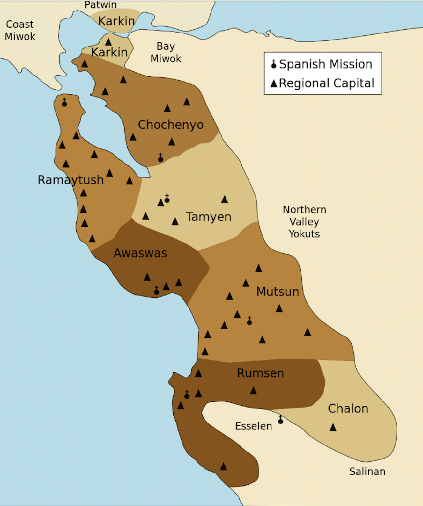
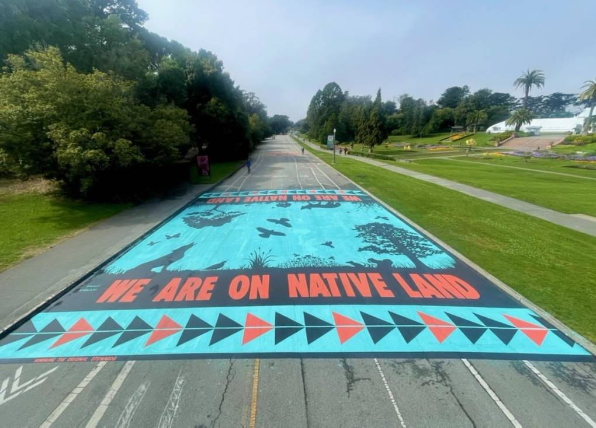

Designation of the first American Indian Cultural District (AICD) in the United States to recognize and honor the Indigenous community of San Francisco
Story by: Moriah Pettway, Shina Trivedi, Yash Markendey, Kim | Published: March 4, 2024

As students, we acknowledge that the Northwestern University, San Francisco campus is located on the unceded ancestral homeland of the Ramaytush Ohlone peoples who are the original inhabitants of the San Francisco Peninsula. Before ‘California’ was part of the United States, Mexico, or Spain, the City and County of San Francisco was inhabited by the Yelamu people, a tribe of the Ramaytush Ohlone peoples. As students, we also recognize the importance of questioning the accuracy and completeness of the history taught through academia, primarily viewed through a Western lens. Native peoples continue to reside here as artists, community organizers, educators, engineers, doctors, scholars and much more. We, as students, wish to support the initiatives for visibility encompassing placemaking and placekeeping that the community leads. We also encourage others to do the same while thinking critically about their role for partaking in these efforts.

Ramaytush Ohlone Land — In the heart of San Francisco's Mission District, a cultural revival is underway as Native communities reclaim their roots and redefine the narrative of the neighborhood. Most San Francisco residents are aware of Little Italy’s painted crosswalks and Chinatown’s Dragon Gate; these public displays are clear markers of the Italian American and Chinese American communities. An initiative, known as The San Francisco Culturals Program, aims to create visibility for the various communities also shaping the cultural landscape of San Francisco.
In March 2020, the San Francisco Board of Supervisors approved the American Indian Cultural District (AICD), making it the first city-approved cultural district in the United States dedicated to honoring its Native communities. Most recently, in 2021, the AICD expanded to include Chutchui, an original village site of the Ohlone people, more commonly known as Mission Dolores Park.
The American Indian and Alaska Native community make up 0.8% of the San Francisco County population, according to the 2020 Census. Across San Francisco, the Ramaytush Ohlone people continue to honor their cultural practices as original stewards of the peninsula.

Lanie Liem used to live in the Mission District and still frequents the park, but she didn’t know about Mission's history.
Two of the organizations working to answer this question are the American Indian Cultural District (AICD) and Bay Area American Indian Two-Spirits. Both are working to re-indigenize what is known today as the Mission District — as well as spaces beyond the neighborhood.
Established in 2020, the AICD has been working to increase public awareness and visibility of local Native American culture and history.
Much of the organization’s work has been in partnership with the city government. In 2021, AICD worked with the San Francisco Health Commission to establish a resolution acknowledging and addressing health disparities in the Indigenous community. In 2022, AICD worked with the Planning Department to address Indigenous housing needs.
A more recent initiative centers on confronting systemic cultural erasure and expanding the rich cultural heritage of San Francisco. Known as Indigenize SF, the project is organized into four major areas: murals, flagpole banners, digital walking tours and street signs.
AICD has worked with local Indigenous artists to create murals and banners throughout San Francisco.

In October 2022, for example, Rachel Znerold painted the “We Are On Native Land” mural in Golden Gate Park, featuring Indigenous animals, plants and people. Golden Gate Park sits on Yelamu land. “The “we” reminds us that we are never alone in the park and to honor our unique and shared relationships, responsibility, and connection to the plants and animals in GGP,” the AICD website says.
The artist Lyn Risling, who has Karuk, Yurok and Hupa ancestry, created a piece entitled Ifheektavaan, which translates to Truth Bearer, for flagpole banners in the city.

The final focus area in AICD’s cultural initiative is called Mapping Genocide, and the first stage of the project is research. The staff is working to identify streets, parks, memorials and other points of interest that honor people connected to and responsible for the genocide of the American Indian community. So far, the staff has found over 35 such streets in San Francisco, including Lyon Street, Mason Street, Hallek Street and Hastings Street.
Mason Street and Fort Mason are both named after Colonel Richard Barnes Mason, who participated in the Gold Rush in the 1800s. Richard Mason worked closely with John Sutter, who was responsible for bringing Native American women into Fort Mason and forcing them into prostitution.
“I suspect few Californians today contextualize their homes as sitting upon stolen land or land gained by bloody force or artful deceits, nor do they likely consider the social and political questions of present day Native American affairs in the light,” said Brendan Lindsay, associate professor at California State University of Sacramento in a video released by the AICD.
Diane Matsuda, president of the Historic Preservation Commission under SF Planning, spoke of a statue that was removed in 2018.
“If you have ever been to the Civic Center … there was a statue there that we had one part removed because of its very offensive message that it was showing and that dealt with a Native American that was on his knees to a white General. People found that to be very offensive and not what we believe is social and racial equity,” she said.


But it’s not all about history. Angel Fabian, executive director of Bay Area American Indian Two-Spirits (BAAITS), sees the Indigenous community living here and now.
BAAITS was founded in 1999 as a place for LGBTQ and Intersex Native Americans and their allies to participate in activities relating to culture and identity. The term two-spirit is used by many the Native community to describe people who possess both male and female spiritual attributes. The founders created a sober space where community members could socialize, learn from one another and share their identities.
Every year since 2012, BAAITS has held a PowWow — an event that connects the community on a cultural, spiritual and social level, typically through dance, food and prayer. The first BAIITS PowWow was held at the San Francisco LGBTQ center, and it was the first PowWow in the world to be completely open to the public.
BAAITS’ most recent PowWow, which took place on February 10, exceeded organizers’ expectations. About 5,000 people showed up, including members of the BAAITS community as well as families and allies. 76 vendors attended, including 15 nonprofit organizations.
It was massive. It was beyond our expectations. And I think that we are outgrowing the space that we're currently in,” Fabian said.
Less than two weeks before the PowWow, BAAITS and AICD unveiled a mural in Clarion Alley. AICD sponsored the mural as part of Indigenize SF, and the artist Victoria Montaño reached out to members of the community to ask how they wanted to be represented.
“The artist is a community member and is truly committed to making sure that [the mural] is as reflective of the community as possible,” Fabian said.
Montaño is two-spirit and of Ohlone descent; their work included a blue and pink being representing the masculine and feminine natures.
The success of the recent PowWow and new art projects only motivates BAAITS to continue its mission to cultivate a space where all identities are welcome.
“We're hoping to rent office space, right across the street from the mural and have our own community space available for different gatherings, different events, different socials,” Fabian said.